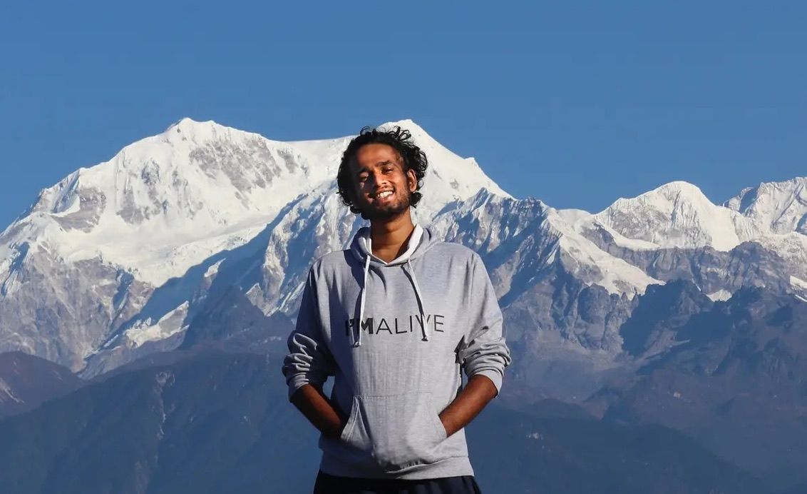
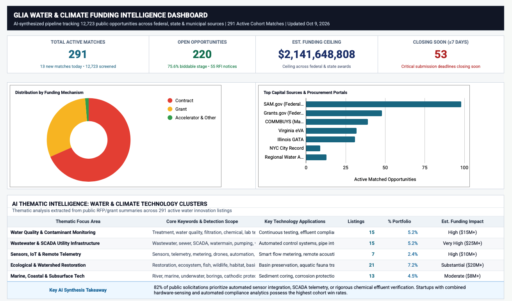

Engineer by day, LEGO builder by night.
I take physical products from prototype to production, and I build software with AI to solve the problems I run into along the way. Five years industrializing tires at Michelin, now finishing Kellogg's MMM program in Chicago.

Three ways I build
Projects overlap tracksAI-enabled builds
Tools and prototypes I built with AI as my coding partner, from a course-material RAG to a self-updating funding database.
Browse →4 projectsHardware & industrial
Five years taking tires from prototype to volume production at Michelin, plus NPI, manufacturing and circular-product work.
Browse →5 projectsDesign thinking
Research-led projects from Kellogg's MMM program: interviews, personas, prototypes, testing, and a business case.
Browse →Selected work
All work →Kellogg RAG
A private chatbot that answers from 13 courses of my Kellogg material and cites the exact slide it used.

GLIA Funding Tracker
A self-updating database of water and climate-tech funding from 19 public sources, running daily at $0.
Startup Banking Insights
Four AI-powered features that help a global bank's Series A to C clients make finance decisions. Capstone project.
Sherpa: AI Trip Packing
An AI gear companion for an outdoor-gear brand that turns trip planning from stress into anticipation.
CloudCycle: Going Electric
Winner, Kellogg Design Challenge. A system that helps small landscapers switch from gas to electric power equipment.
Michelin: Prototype to Production
Five years taking B2B tires from concept to volume production across China, India and Thailand.
Heavy-Industry NPI Toolkit
A stage-gate toolkit and $15M+ savings roadmap for a heavy industrial manufacturer's product development.
Collective: Bulk for City Renters
Fractional bulk delivery that brings warehouse-club prices to renters without a car or a storeroom.
Employee Pulse
One app for frontline hotel staff to connect, grow and look after themselves.